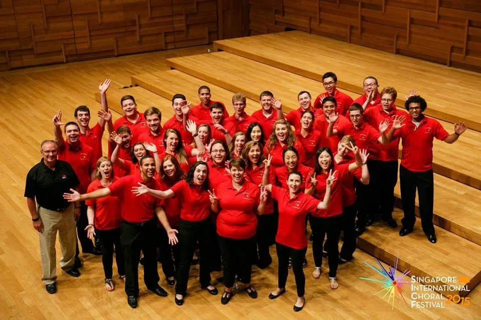
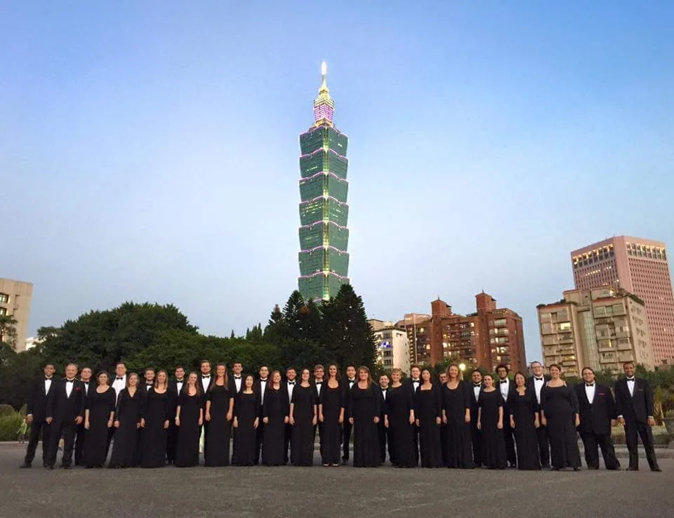
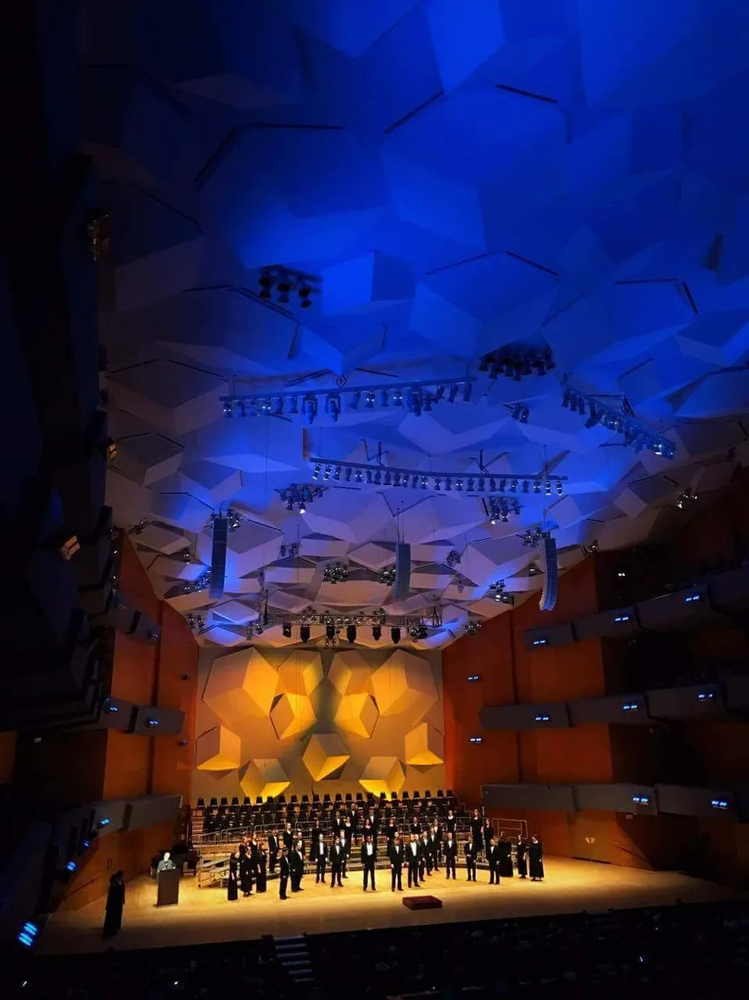
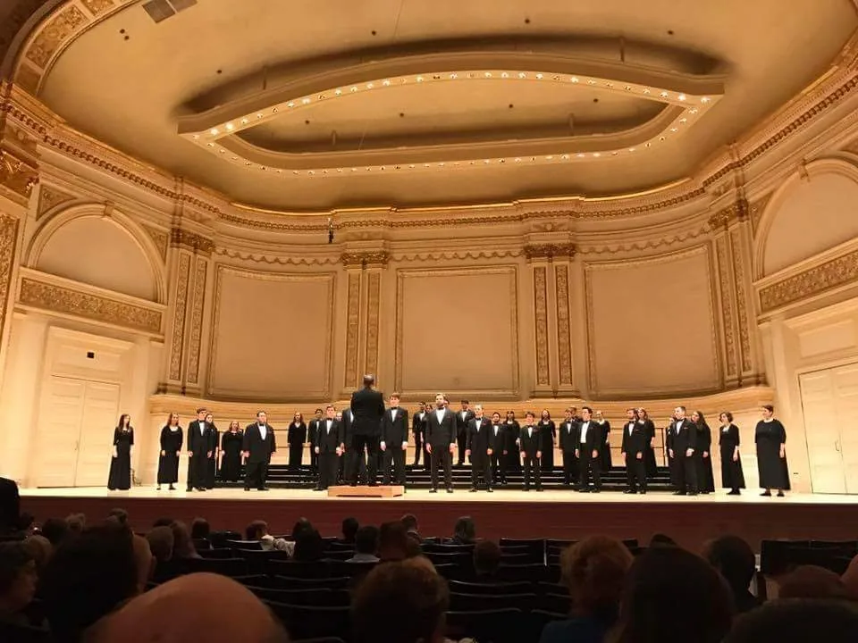
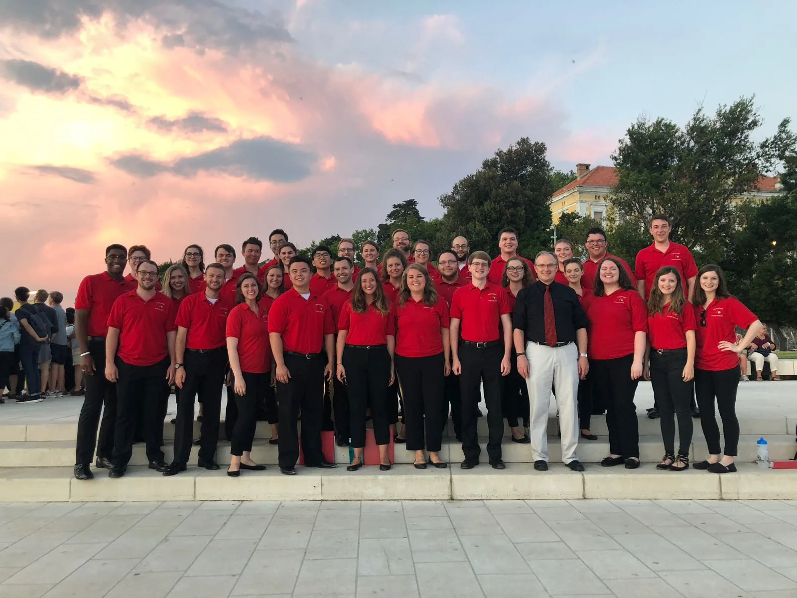
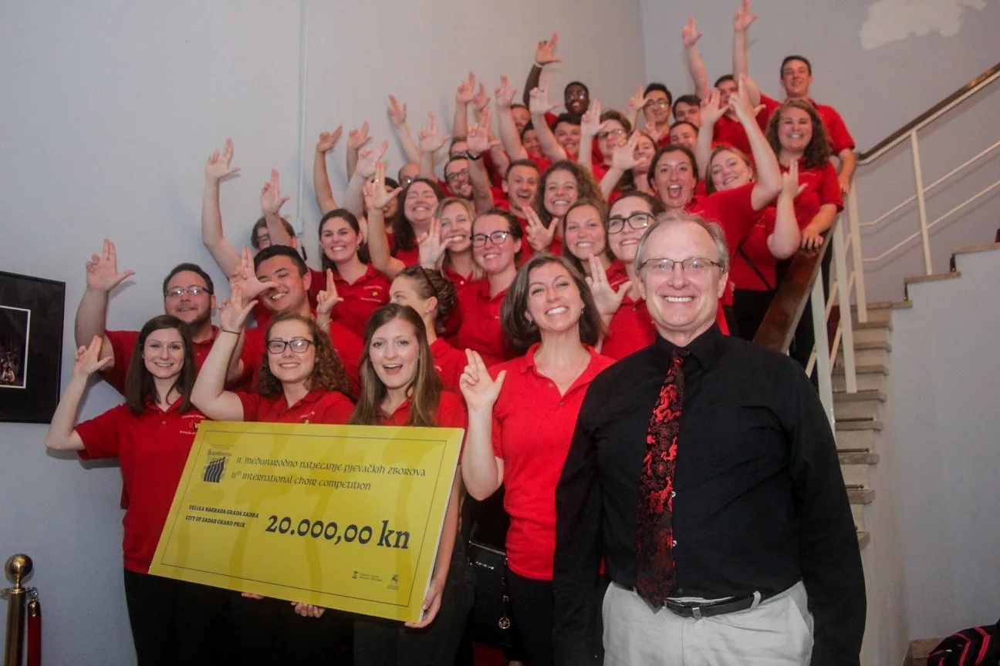
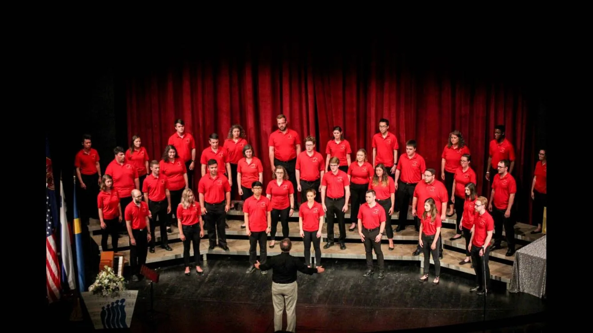
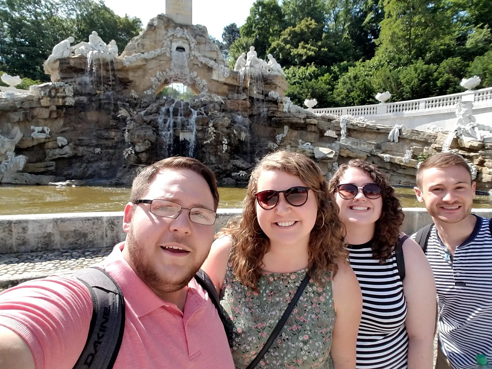
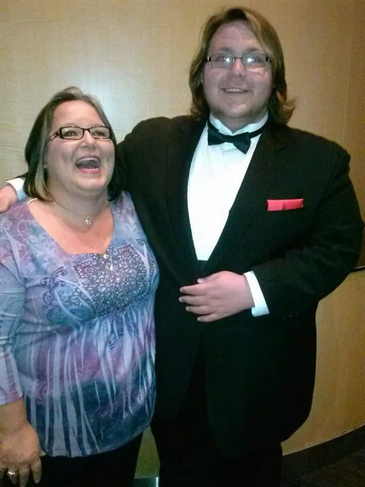

About
Beyond the Portfolio
The experiences that shaped my approach to learning, leadership, and performance.

About
The experiences that shaped my approach to learning, leadership, and performance.
Long before I started building formal L&D projects, I was already learning what helps individuals succeed. As a performer, educator, conductor, and facilitator, I have seen how learners build confidence, respond to feedback, develop skills over time, and work toward meaningful goals.
Music made that growth easy to see and hear. A learner can start unsure of themselves, build skills through guided practice and feedback, and eventually perform independently in front of a live audience. That experience still shapes the way I approach learning today. Give learners clear expectations, meaningful practice, useful feedback, and the support they need to succeed.
Learning Philosophy
Learners are more willing to ask questions, practice, take risks, and learn from mistakes when they believe they can succeed. Good learning design helps build that confidence before mastery ever happens.
My approach
I am drawn to learning experiences that help people move from “I understand this” to “I can actually do this.” That means designing clear expectations, practice opportunities, feedback loops, reflection points, and performance supports that help learners apply new skills beyond the training environment.
The throughline
Whether I was leading a choir, building onboarding materials, designing a digital media pathway, or developing an interactive portfolio experience, the goal was similar: understand the learner, remove barriers, support practice, and create conditions where people can perform with greater confidence.
Design philosophy
Learners need to know what success looks like before they can work toward it.
Learners build skills by practicing them, receiving useful feedback, and having another chance to apply what they have learned.
Learning shouldn't be static. I use learner needs, performance data, feedback, and observation to see what's working and what needs to change.
Technology matters most when it removes barriers and helps learners do something meaningful.
Learning should prepare people to apply skills in real contexts, not just complete activities.
Job aids, coaching, follow-up, reflection, and feedback give learners support when it is time to actually use what they have learned.
A learning journey

Learning Environment
The rehearsal room taught me the importance of environment. Clear structure, strong relationships, feedback, and a sense of belonging all play a role in learner success.

Learner Impact
Meaningful evidence of learning impact often came directly from my learners. Their notes, projects, and reflections showed me when they felt successful, supported, and proud of what they had accomplished.

Professional Growth
Graduate studies gave me a stronger foundation in curriculum design, assessment, learning theory, and learner-centered design, while helping me connect years of practical experience to the research behind it.
Learner Impact
Not every meaningful learning outcome shows up in a test score. Some of the best evidence I received came through learner reflections, projects, and messages they chose to leave behind. They showed me that learners were not just building skills. They were building confidence, finding a sense of belonging, and recognizing their own growth.


Professional Music Career
Music provided me with opportunities that I never imagined I could have. I have performed on international stages and worked alongside talented musicians, composers, and professionals from all walks of life. These experiences taught me that when people with different strengths work toward the same goal, the result can be nothing short of amazing. They also taught me the value of intentional preparation, constructive feedback, trust, adaptability, and knowing how your individual role contributes to a larger whole.









A performance from my time with the professional chamber ensemble Nova Singers.
Watch Performance
Additional background in performance, conducting, biography, recordings, and musical accomplishments.
View Music PortfolioPersonal brand
The music staff and treble clef represent where I started. The bar graph and upward arrow represent where that experience has taken me: toward learning, growth, performance improvement, and continuous development. Together, they represent the idea behind all of my work. Good learning helps individuals and organizations grow with confidence and purpose.